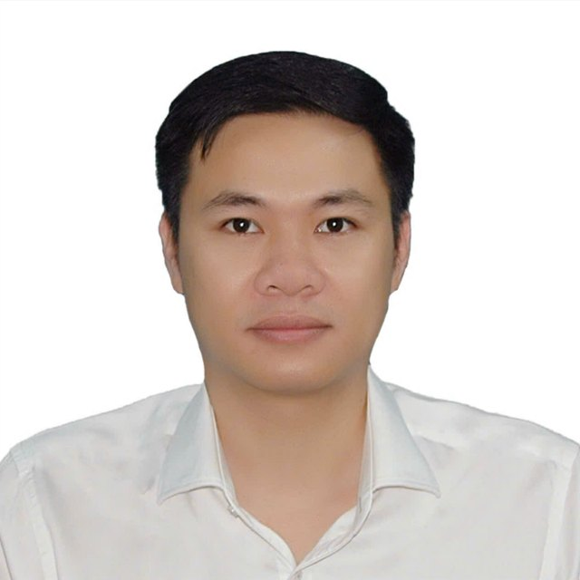

Thạc sĩ, Bác sĩNguyễn Văn MạnhDr. Nguyen Van ManhMSc, Head of Department
Thực hiện hơn 3.000 ca phẫu thuật gan, mật, tụy và ghép gan thành công tại Bệnh viện Quân y 175, chủ nhiệm đề tài về nội soi tán sỏi đường mật.Performed more than 3,000 successful liver, bile duct, pancreatic and transplant operations at Military Hospital 175, and led research on cholangioscopic lithotripsy.

Lĩnh vực chuyên mônAreas of practice
Số ca phẫu thuật đã thực hiện từ năm 2017 đến nay, theo nhóm bệnh lý.Operations performed since 2017, by condition.
Phẫu thuật ganLiver surgery
Cắt gan theo giải phẫu, ung thư ganAnatomical hepatectomy, liver cancer
Phẫu thuật đường mậtBiliary surgery
Sỏi đường mật, nội soi tán sỏiBile duct stones, cholangioscopic lithotripsy
Phẫu thuật tụyPancreatic surgery
Cắt khối tá tụy, miệng nối Blumgart cải biênPancreaticoduodenectomy, modified Blumgart anastomosis
Ghép ganLiver transplant
Phẫu thuật ghép ganLiver transplantation surgery
Chuyên môn và kỹ năngExpertise and skills
Bác sĩ Mạnh là Trưởng khoa Phẫu thuật Gan mật tụy, Bệnh viện Quân y 175, nghiên cứu viên chính, với hơn 3.000 ca phẫu thuật và nhiều công trình về phẫu thuật gan, mật, tụy.Dr. Manh heads the Hepatobiliary and Pancreatic Surgery Department at Military Hospital 175 and is a senior researcher, with more than 3,000 operations and many publications on liver, bile duct and pancreatic surgery.
- Cắt gan theo giải phẫu (ung thư gan)Anatomical hepatectomy (liver cancer)
- Cắt khối tá tụy, miệng nối Blumgart cải biênPancreaticoduodenectomy, modified Blumgart anastomosis
- Nội soi tán sỏi đường mậtCholangioscopic lithotripsy
- Ghép ganLiver transplantation
- Nghiên cứu khoa họcScientific research
Đào tạo và công tácTraining and career
- 3/2025 – naypresentTrưởng khoa Phẫu thuật Gan mật tụyHead, Hepatobiliary and Pancreatic SurgeryBệnh viện Quân y 175, TP.HCMMilitary Hospital 175, HCMC
- 2017 – 2025Bác sĩ, Khoa Ngoại bụngSurgeon, Abdominal SurgeryBệnh viện Quân y 175Military Hospital 175
- 2016Thạc sĩMaster's degreeHọc viện Quân yMilitary Medical Academy
- 2013Bác sĩ đa khoaDoctor of MedicineHọc viện Quân yMilitary Medical Academy
Nghiên cứu khoa họcScientific research
Chủ nhiệm 1 đề tài, tham gia 1 đề tài cấp cơ sở và 2 giải Khuyến khích Hội thi sáng tạo trẻ Toàn quân.Led 1 and took part in 1 institutional project; two Encouragement Prizes at the Army Youth Innovation Contest.
Đánh giá kết quả phẫu thuật nội soi mở ống mật chủ kết hợp nội soi đường mật tán sỏi điện thủy lực điều trị sỏi đường mậtLaparoscopic choledochotomy with cholangioscopic electrohydraulic lithotripsy for bile duct stones
Cấp cơ sở, Bệnh viện Quân y 175Institutional level, Military Hospital 175
Kết quả bước đầu cắt gan theo giải phẫu điều trị ung thư tế bào ganEarly results of anatomical hepatectomy for hepatocellular carcinoma
Cấp cơ sở, Bệnh viện Quân y 175Institutional level, Military Hospital 175
Công trình công bốPublished work
★ là tác giả chính. Còn lại là đồng tác giả.★ first author. Others: co-author.
- 2025
Kết quả dẫn lưu túi mật qua da trong điều trị viêm túi mật cấp do sỏi tại Bệnh viện Quân y 175Tạp chí Y học cộng đồng
- 2025
★ Kết quả phẫu thuật nội soi kết hợp nội soi đường mật tán sỏi trong mổ điều trị sỏi đường mật tại Bệnh viện Quân y 175Tạp chí Y học thực hành 175, số 43
- 2025
Cắt khối tá tụy cấp cứu không do chấn thương: báo cáo một trường hợpTạp chí Y dược học quân sự, tập 50, số 7
- 2025
★ Động mạch gan chung xuất phát từ động mạch mạc treo tràng trên: một trường hợp hiếm gặp tại Bệnh viện Quân y 175Tạp chí Y dược học quân sự, tập 50, số 6
- 2025
Common hepatic duct necrosis following transarterial chemoembolization for hepatocellular carcinoma: A case report and literature reviewInternational Journal of Surgery Case Reports, vol. 130
- 2024
★ A rare case report of omental synovial sarcoma complicated hemoperitoneum and literature reviewWorld Journal of Surgical Oncology, 22:301
- 2024
Emergency pancreaticoduodenectomy for complex pancreaticoduodenal damage with multiple organ injuries following blunt abdominal traumaInternational Journal of Surgery Case Reports
- 2024
Kết quả sớm phẫu thuật cắt gan theo giải phẫu điều trị ung thư biểu mô tế bào gan tại Bệnh viện Quân y 175Tạp chí Y dược học lâm sàng 108, tập 19, số 6
Xem thêm 12 công trìnhShow 12 moreThu gọnShow less
- 2024
U cơ trơn dây chằng tròn của tử cung: báo cáo ca bệnh tại Bệnh viện Quân y 175Tạp chí YDTH 175, số 40
- 2024
Kết quả sớm phẫu thuật cắt gan theo giải phẫu điều trị ung thư biểu mô tế bào gan ở người cao tuổi tại Bệnh viện Quân y 175Tạp chí YDTH 175, số 39
- 2024
★ Đặc điểm lâm sàng và kết quả điều trị phẫu thuật thủng đường tiêu hóa do dị vật tại Bệnh viện Quân y 175Tạp chí YDTH 175, số 39
- 2024
★ Mucocele of the appendix: through 8 cases at Military Hospital 175Tạp chí YDTH 175, số 38
- 2024
★ Nhân hai trường hợp tắc ruột do sỏi đường mật được chẩn đoán và điều trị tại Bệnh viện Quân y 175Tạp chí YDTH 175, số 37
- 2023
★ Nhân một trường hợp sarcoma hoạt dịch mạc nối lớn được chẩn đoán và điều trị tại Bệnh viện Quân y 175Tạp chí YDTH 175, số 36
- 2023
Nhân 1 trường hợp chấn thương gan đơn thuần có khí tự do trong ổ bụngTạp chí YDTH 175, số 33
- 2022
★ Nhân một trường hợp khối u cơ sợi khổng lồ trên bệnh nhân đa polip tuyến đại tràng được chẩn đoán và điều trị tại Bệnh viện Quân y 175Tạp chí YDTH 175, số 30
- 2021
★ Đánh giá kết quả bước đầu ứng dụng miệng nối Blumgart cải biên trong phẫu thuật cắt khối tá tràng – đầu tụy tại Bệnh viện Quân y 175Tạp chí YDTH 175, số 27
- 2021
Nhân một trường hợp ung thư biểu mô gan nguyên phát và ung thư đại tràng Sigma đồng thời ở bệnh nhân không có xơ gan và virus viêm gan B, CTạp chí YDTH 175, số 25
- 2020
★ Nhân một trường hợp xoắn mạc nối lớn được chẩn đoán và điều trị tại Bệnh viện Quân y 175Tạp chí YDTH 175, số 24
- 2020
Đặc điểm nuôi dưỡng và một số yếu tố liên quan đến tỉ lệ suy dinh dưỡng ở bệnh nhân nội trú tại Bệnh viện Quân y 175Tạp chí YDTH 175, số 21
Liên hệ bác sĩGet in touch
Dành cho bệnh nhân, người nhà và đồng nghiệp muốn hội chẩn hoặc hợp tác chuyên môn.For patients, families and colleagues seeking consultation or collaboration.
- Điện thoạiPhone(+84) 966 499 570
- Emailmanhnguyen2388@gmail.com
- Nơi công tácWorkplaceBệnh viện Quân y 175, 786 Nguyễn Kiệm, P. Hạnh Thông, TP.HCM